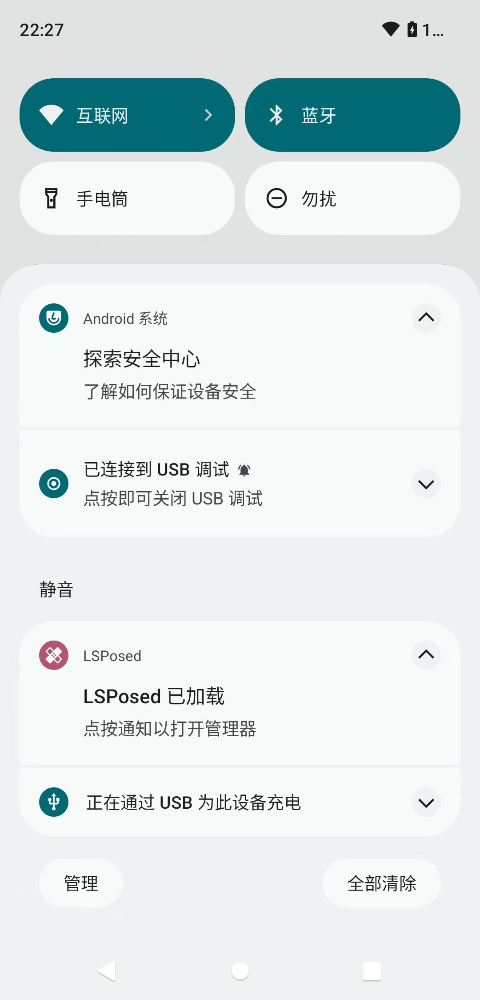
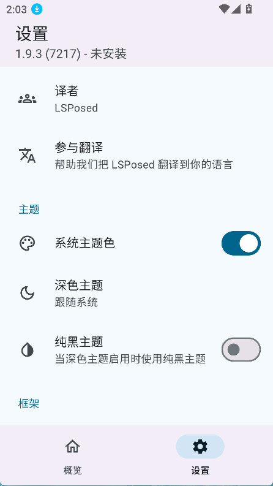

主力机上我装了框架，银行 APP 还活着的那一周
把折腾党最爱用的模块框架塞进主力机是个要命的决定——一边是各种提升效率的模块，一边是银行、考勤、工作资料这些一碰就炸的敏感应用。我花了一周时间把冲突一个个摁下去，最后两边都稳住了。
上周三早上七点四十，我坐在地铁上刷手机的时候，发现微信里那个自动转发消息的模块失灵了。本来以为是微信更新了版本把接口堵了，点进管理器一看——好家伙，整个框架直接从系统里卸载了。
这不是第一次发生。前两次是我在第三方 recovery 里刷了个不完整的模块包，启动循环折腾了半晚上。但这次不一样，我根本没刷任何东西，就是正常重启了一次。更麻烦的是，主力机里装着招商银行、单位考勤、企业微信这三个一碰就敏感的应用。框架一激活它们就弹检测警告，上次我就是因为没管这个，结果公司的企业微信直接给我踢下线重新验了身份。
这就是那台设备的尴尬处境：我既要它能装个微信增强模块省点手动转发的功夫，又要它老老实实做个能打卡、能转账、能开会的工作机。框架这类东西装上去容易，让它不搞事才是真本事。
先搞清楚自己到底在跟什么较劲
我先去lsposed官网翻了翻版本说明。现在的新版已经迭代到 v2.x 了，支持矩阵覆盖从安卓 8.1 一直到安卓 17——我的主力机是安卓 14，正好在最新线的支持范围内，版本对得上，排除了系统版本不兼容的嫌疑。硬件方面 Bootloader 早就解过锁，Magisk 也是 27.0 版本带 Zygisk，前提条件全都满足。
那问题出在哪？翻到日志页才发现，是上次我手贱把那个转发模块的作用域勾得太满了——不仅勾了微信，连招商银行和企业微信也一起勾上了。框架在这些应用里一注入，检测程序当场就炸。
说白了就是自己送人头。

作用域纪律是第一道防线
框架里每个模块都有作用域勾选框，勾哪个应用、模块就会进哪个应用的进程。不勾的话，那个应用进程里框架完全不存在——连痕迹都不留。这是零成本就能做的事，也是最容易被忽略的事。
我把所有模块的作用域重新过了一遍：微信相关的只保留微信本体和企业微信的非工作资料用户空间，其他敏感应用一个都不勾。然后顺手把招商银行、考勤、支付宝这几个银行支付类应用加进了 Magisk 的拒绝列表（DenyList）。注意这里不能开「强制拒绝」开关——开了的话框架在这些应用里的所有模块都会被屏蔽，等于我把整个框架都禁用了。
其实有个更好用的办法，社区里叫 Shamiko 的模块，专门配合拒绝列表工作但不需要开强制开关。我是从lsposed文档里翻到这套搭配思路的——它会自己隐藏 root 和框架的痕迹，同时不影响框架在其他应用里正常运行。这个组合拳打下来，检测通过率比单纯靠拒绝列表高得多。
但我还是留了一手。主力机上有太多碰不起的应用，搞砸了就得重刷系统、重新装所有东西，代价太大。所以最稳的方案还是：主力机保持干净，框架只用在次主力的小备机上。那个备机平时用来测新模块、跑自动化脚本，坏了就换，代价低得多。
桌面图标那个事，我倒是习惯了
之前一直用老版本，管理器在桌面有个图标，点开就是主界面。新版 v2.x 从官方下载拿到手，移除了快捷方式创建功能，入口变成了通知栏和拨号盘暗码。
刚换新版的时候挺不适应的，每次要进管理器都得先下拉通知栏。习惯了之后反倒觉得新版的设计更合理——框架这种东西本来就是偷偷用的，桌面摆个图标反而太招摇。

不过也有反向需求。上次把手机借给我爸打麻将，他无意中翻应用列表看到了框架管理器的图标，问我这是干嘛用的，我编了个"手机加速管家"才蒙混过去。后来我直接把状态通知关了，日常全靠拨号盘暗码进入。代价就是少了个激活状态的"心电图"——以前重启之后看一眼通知栏就能知道框架有没有正常加载，现在得自己手动进管理器确认。权衡一下还是保密更重要。
多用户场景的坑，我踩过
主力机开了工作资料空间，企业微信和考勤都装在那个独立用户里。之前不知道模块的作用域规则，结果框架在工作资料里时灵时不灵。排查了半天才搞清楚：作用域是按应用勾选的，勾选之后框架会把注入带到该应用所在的用户空间，但模块本体的启用状态是各用户独立的。也就是说，如果工作资料里模块没开，那不管作用域怎么勾都没用。
这个规则细节在 lsposed 文档里有写，但藏在进阶玩法里，第一次上手很容易踩坑。
一周下来的收尾
现在主力机恢复了原来的工作机状态，框架只在备机上活跃。微信那个转发模块的需求还在，但我换了个不需要 root 的方式——用自动化脚本配无障碍服务，功能差一点但够用，不会触发任何检测。
这一周折腾下来最大的收获不是装好了某个模块，而是想清楚了一个事：框架不是主力机的标配，它是折腾党的专用工具。用错了地方，能让你的手机从工作机变成砖。